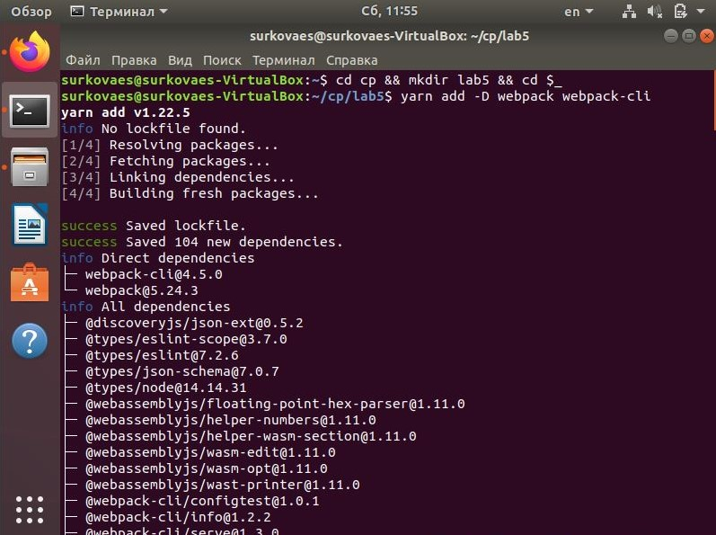
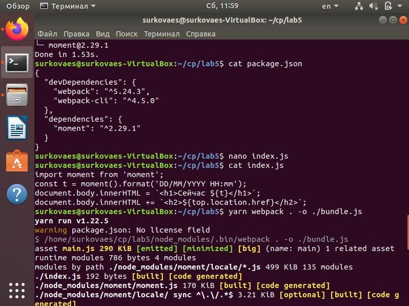
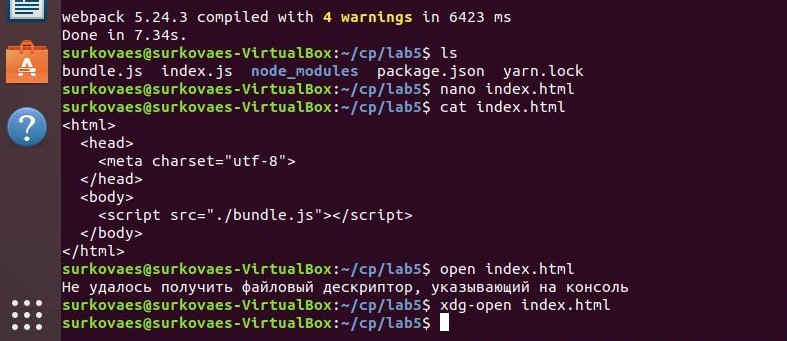

ВСР Тема 1. Сборка проекта с помощью бандлера Webpack
- Добавление зависимостей webpack и webpack-cli
yarn add -D webpack webpack-cli
- Добавление библиотеки moment
yarn add moment
- Создание файла index.js
- Сборка проекта
yarn webpack . -o ./bundle.js
- Создание файла index.html

Результат